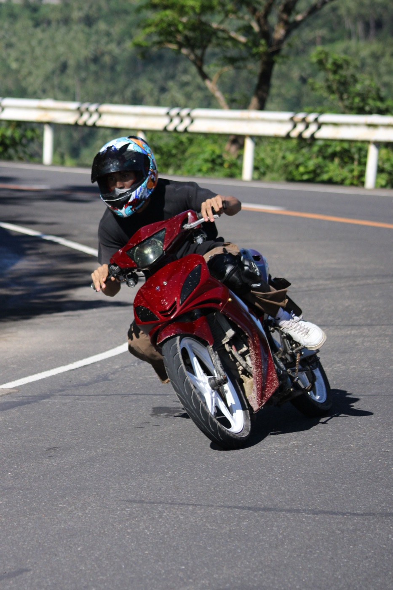

50cc 오토바이로 오르막과 내리막 타는 법

50cc 오토바이는 주로 도시용으로 만들어졌습니다. 상태 좋은 스쿠터는 완만한 오르막을 감당하지만, 거리 여유와 하중에 대한 차분한 판단이 필요합니다. 가파른 경사에서는 속도가 낮아지는 게 정상입니다.
오르막 전
미리 일정하고 안전한 속도를 내고, 더 빠른 차량을 막지 않게 오른쪽으로 다니세요. 오르막 전에 추월을 시작하지 마세요: 힘이 금방 바닥날 수 있습니다. 운전자, 동승자, 짐이 무거울수록 속도 저하가 뚜렷합니다.
스로틀 쓰는 법
스로틀을 계속 확 열고 닫지 말고 일정하게 유지하세요. 엔진 소리는 큰데 속도가 계속 떨어진다면 끝없이 “쥐어짜려” 하지 마세요. 안전한 곳에 멈추고 오토바이를 식히세요.

오르막 커브
커브 출구를 보고, 반대 차로를 침범하지 말고, 보이지 않는 구간 한가운데 멈추지 마세요. 가장자리의 모래, 낙엽, 잔돌은 접지력을 떨어뜨립니다. 급하게 무게를 옮기지 말고 몸을 차분히 두세요.
내리막의 가장 큰 실수
오토바이가 쉽게 굴러 내려간다고 속도를 내지 마세요. 속도는 보이는 구간 안에서 멈출 수 있어야 합니다. 한 레버를 잠길 때까지 쥐지 말고 두 브레이크로 미리, 부드럽게 제동하세요.
긴 내리막에서는 브레이크를 계속 최대로 잡고 있지 마세요: 과열되어 성능이 떨어질 수 있습니다. 넓은 거리를 유지하며 짧고 통제된 제동으로 속도를 줄이세요.
동승자와 짐
어려운 경로 전에 50cc의 능력을 솔직하게 판단하세요. 둘이 타고 짐까지 있으면 오르막이 훨씬 힘들고 내리막 제동 거리가 늘어납니다. 가파르거나 긴 산길이라면 다른 경로나 더 적합한 교통수단을 고르는 게 낫습니다.
비가 오면 모든 게 달라진다
젖은 경사에서는 커브 전부터 속도를 줄이세요. 차선 도색, 금속 덮개, 낙엽, 매끈한 콘크리트가 미끄러워집니다. 폭우 뒤에는 도로를 가로지르는 흙, 돌, 물이 있을 수 있으니 주행을 미루는 게 현명합니다.
돌아가야 할 때
- 오토바이 속도가 위험한 수준까지 떨어진다;
- 과열 냄새가 난다;
- 브레이크가 물렁하거나 평소와 다르다;
- 폭우나 안개가 시작됐다;
- 도로가 손상됐거나 통제됐다.
시내 주변의 평범한 나들이는 냐짱 출발 경로를 보세요.